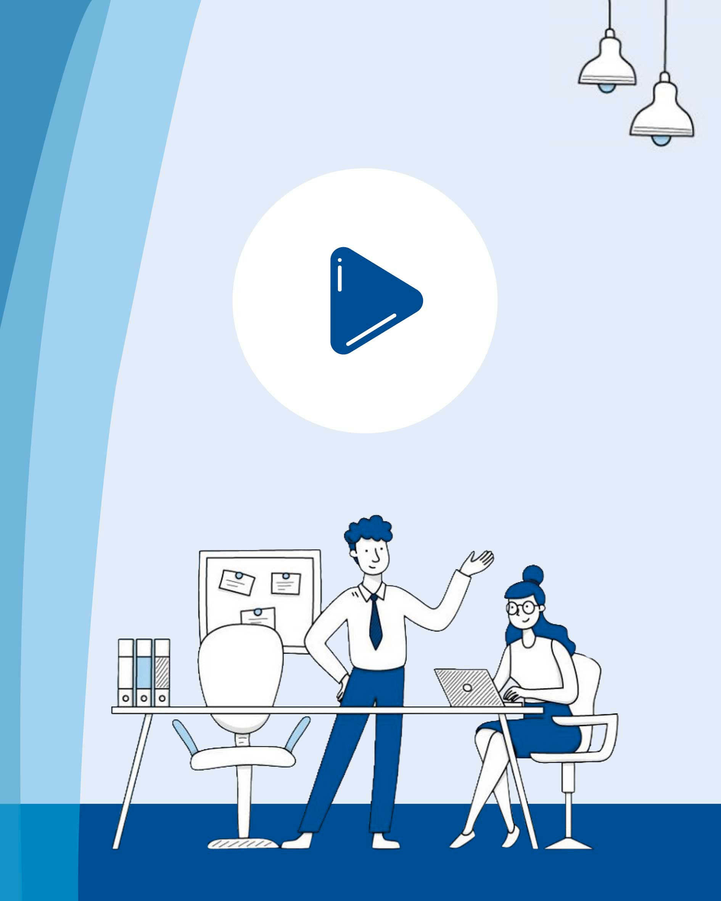

Dans le cadre de la diffusion interne d’une conférence de la Banque de France, j’ai assuré la post-production des captations vidéo : dérushage, synchronisation des trois caméras et montage final. J’ai également conçu une vignette en cohérence avec l’identité visuelle de la conférence afin d’accompagner la diffusion des contenus.

J’ai commencé par organiser et dérusher les différentes captations vidéo avant de synchroniser les trois angles de caméra avec la bande sonore pour réaliser le montage final. Une fois les vidéos finalisées, j’ai conçu une vignette de diffusion en m’appuyant sur l’identité visuelle de la conférence afin d’assurer une cohérence graphique avec l’ensemble des supports de communication.